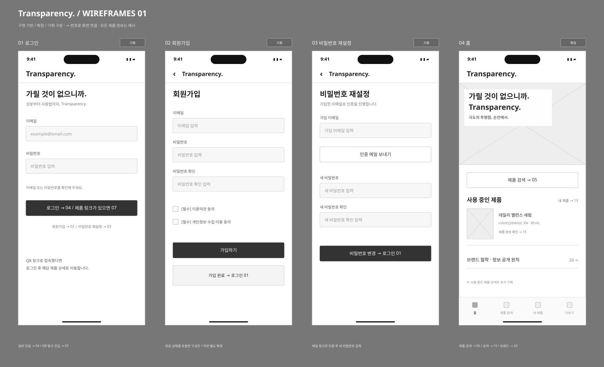
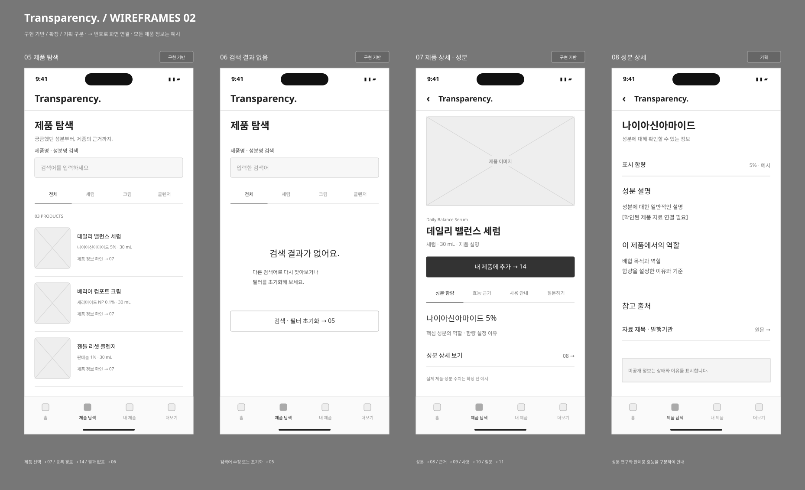
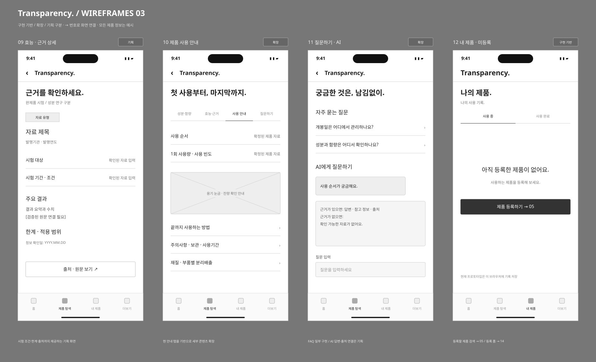
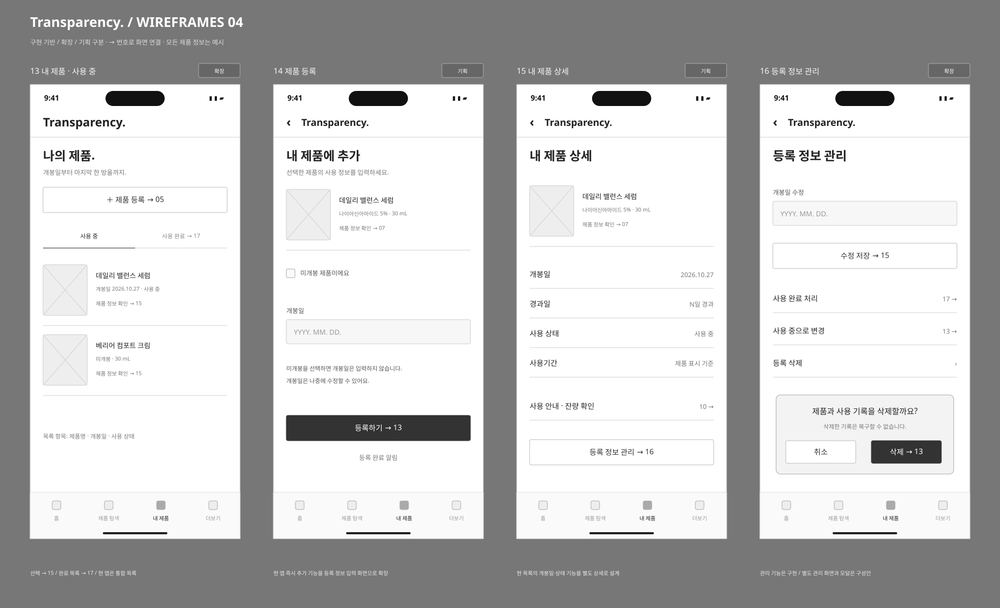
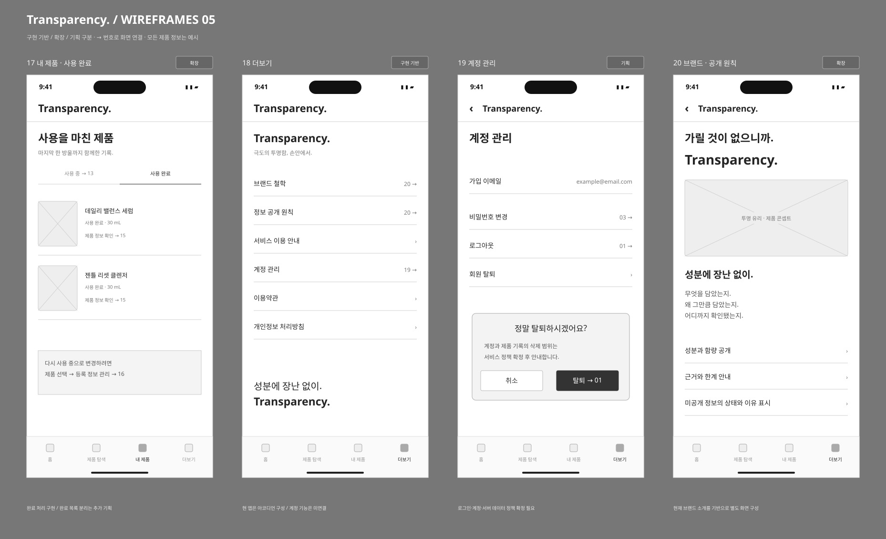

<!doctype html><html lang="ko"><meta charset="utf-8"><title>Transparency. 와이어프레임</title><style>@page{size:A3 landscape;margin:10mm}body{margin:0}.sheet{width:400mm;height:276mm;display:flex;align-items:center;justify-content:center;break-after:page}.sheet:last-child{break-after:auto}.sheet img{width:100%;height:auto}</style><section class="sheet"></section><section class="sheet"></section><section class="sheet"></section><section class="sheet"></section><section class="sheet"></section>